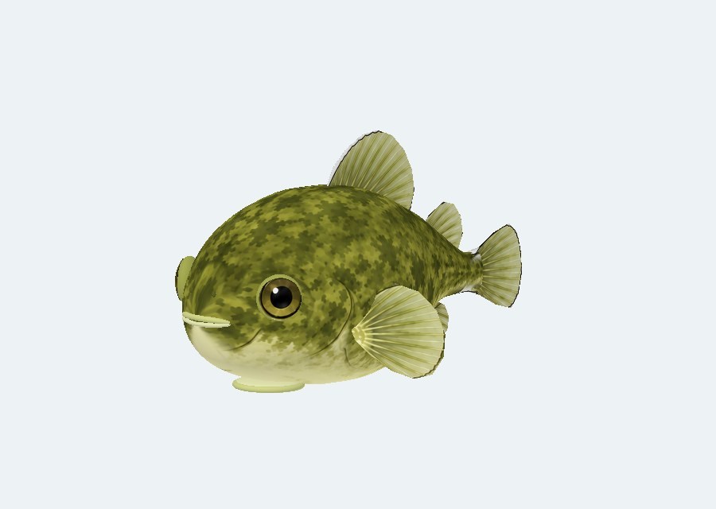
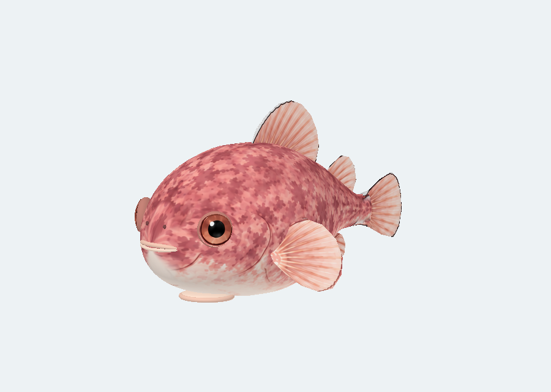
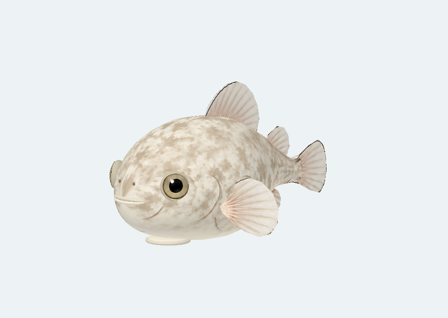

水槽に戻る
緑・ピンク・白。画像から組み立てた、テクスチャ内蔵のGLBです。

回して見る GLBを保存
6方向の確認画像 · 口の拡大 · 尾の付け根


3体をまとめて保存（ZIP） · 仕様と使い方
各モデルの全長3cmは表示用の仮寸法です。プレビューは外部通信をせずに回転・拡大できます。実測復元ではなく、見えない面は参照図から補間しています。
水槽のレイアウト案を見る（承認済みの完成予想画像）